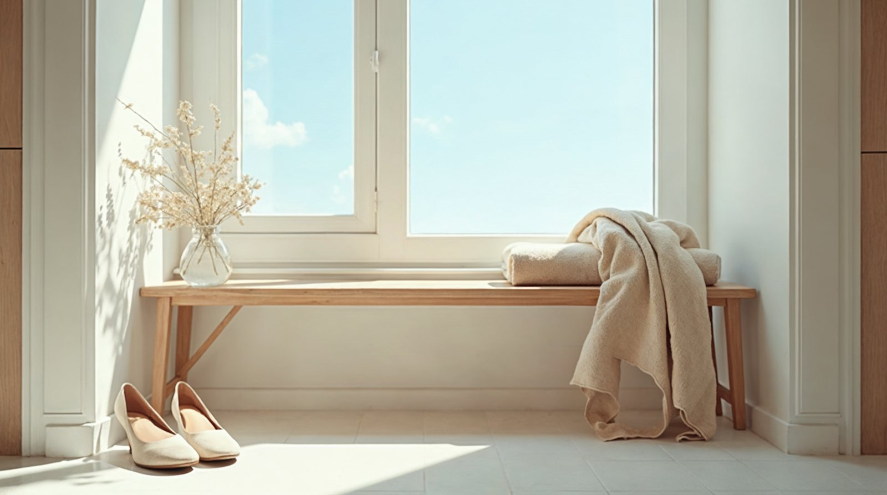
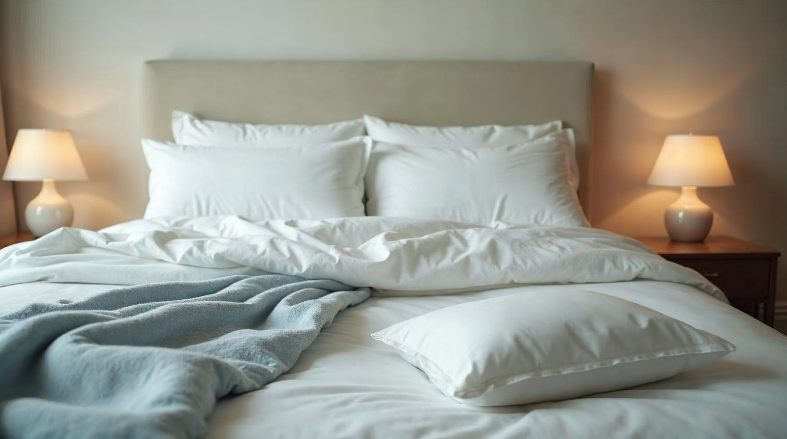
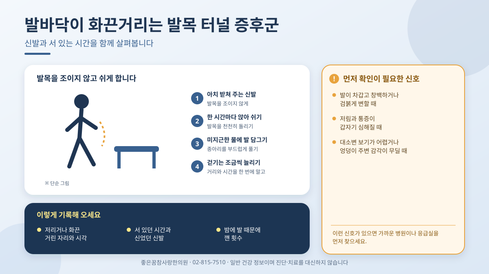

이종호 한의사 감수좋은꿈참사랑한의원 대표원장 (한의사 면허번호 19769)발행 2026-11-26 · 수정 2026-11-26
이 글의 차례
하루 종일 서서 일하고 집에 돌아와 양말을 벗으면 발바닥이 화끈거립니다. 발바닥에 얇은 종이 한 장이 붙어 있는 것처럼 감각이 먹먹하고, 발가락 쪽으로 찌릿한 저림이 퍼집니다. 잠자리에 누워도 발바닥이 뜨겁고 저려 이불 밖으로 발을 내놓게 됩니다.
발바닥이 아프면 흔히 족저근막염을 먼저 떠올립니다. 그런데 통증보다 저림과 화끈거림이 크고, 안쪽 복사뼈 아래를 누르면 발바닥 쪽으로 찌릿하게 울린다면 발목 터널 증후군을 함께 생각해 봅니다. 족근관 증후군이라고도 부릅니다.
안쪽 복사뼈 뒤와 아래에는 뼈와 두꺼운 인대가 만든 좁은 터널이 있습니다. 이 터널로 발바닥의 감각과 작은 근육을 맡는 신경, 혈관, 힘줄이 함께 지나갑니다. 손목터널증후군과 비슷하게, 이 길이 좁아지거나 신경이 눌리면 발바닥이 저리고 화끈거릴 수 있습니다.
진료실에서는 "발바닥에 뭔가 붙어 있는 것 같아요", "모래 위를 걷는 것 같아요"라는 말을 자주 듣습니다. 이런 표현을 그대로 들려주시면 살필 방향을 정하는 데 큰 도움이 됩니다.
왜 안쪽 복사뼈에서 발바닥이 저릴까요
종아리 뒤쪽 깊은 곳을 따라 내려온 신경은 안쪽 복사뼈 뒤를 돌아 발바닥으로 들어갑니다. 이 모퉁이를 도는 자리가 발목 터널입니다. 터널 위는 두꺼운 인대 띠가 덮고 있어서 안쪽 공간이 넉넉하지 않습니다.
이 터널이 좁아지는 이유는 여러 가지입니다. 발목을 접질린 뒤 남은 붓기와 흉터, 터널 안 힘줄을 감싼 막의 붓기, 결절종 같은 작은 물혹, 굵어진 정맥, 평발로 발 안쪽 아치가 무너지며 신경이 당겨지는 경우가 이야기됩니다. 뚜렷한 원인을 찾지 못하는 경우도 적지 않습니다.
신경은 터널을 빠져나오며 발바닥 안쪽과 바깥쪽, 발뒤꿈치 쪽으로 가지를 나눕니다. 그래서 어느 가지가 더 눌리느냐에 따라 엄지발가락 쪽이 저리기도 하고, 발바닥 바깥쪽이나 발뒤꿈치가 저리기도 합니다.
오래 서 있거나 많이 걸은 날, 꽉 끼는 신발이나 발목을 조이는 부츠를 신은 날 증상이 심해지는 경우가 많습니다. 쉬면 조금 가라앉다가 밤에 누우면 다시 화끈거리기도 합니다.
다른 발바닥 통증과는 어떻게 다를까요
발바닥이 불편한 이유는 여러 가지라, 느낌과 자리를 나눠 보면 방향이 달라집니다.
- 발목 터널 증후군: 안쪽 복사뼈 아래에서 발바닥으로 저림과 화끈거림이 퍼지고, 그 자리를 톡톡 두드리면 발바닥 쪽으로 찌릿하게 울립니다. 한쪽에만 생기는 경우가 많습니다.
- 족저근막염: 저림보다 뒤꿈치 안쪽의 찌르는 통증이 크고, 아침 첫발이나 오래 앉았다 일어설 때 가장 아픕니다.
- 허리에서 내려오는 저림: 엉덩이와 허벅지, 종아리를 따라 저림이 함께 내려오고, 허리를 굽히거나 오래 걸을 때 달라집니다.
- 당뇨 등 전신 원인의 신경병증: 양발 끝에서 시작해 양말 모양으로 함께 저리고, 서서히 발목 쪽으로 올라오는 경우가 많습니다.
- 지간신경종: 셋째와 넷째 발가락 사이 앞쪽 발바닥이 찌릿하고, 볼이 좁은 신발을 신으면 심해집니다.
한 사람에게 두 가지가 겹치기도 합니다. 허리에서 오는 저림이 있으면서 발목 터널에서도 신경이 눌리면 저림이 더 크게 느껴질 수 있어, 허리와 발목을 함께 살핍니다.
집에서 해 볼 수 있는 간단한 확인
안쪽 복사뼈에서 손가락 두 마디쯤 뒤쪽과 아래쪽, 발뒤꿈치 쪽으로 이어지는 오목한 자리를 손가락 끝으로 가볍게 톡톡 두드려 보세요. 발바닥이나 발가락 쪽으로 찌릿한 느낌이 퍼진다면 이 터널 쪽을 의심해 볼 수 있습니다.
양쪽 발을 비교하는 것이 중요합니다. 반대쪽 발은 아무렇지 않은데 한쪽만 울린다면 더 의미가 있습니다. 세게 두드리거나 오래 누르지는 마세요.
발바닥을 손으로 쓸어 보며 감각이 둔한 곳이 어디인지 확인해 보는 것도 좋습니다. 엄지발가락 쪽인지, 새끼발가락 쪽인지, 뒤꿈치인지에 따라 어느 가지가 눌리는지 짐작하는 데 도움이 됩니다.

이런 생활에서 잘 생깁니다
발목 터널 증후군은 발목과 발에 부담이 쌓이는 생활과 함께 보이는 경우가 많습니다.
- 하루 대부분을 서서 일하는 직업: 매장, 주방, 미용실, 공장, 교단
- 평발이거나 걸을 때 발목이 안쪽으로 무너지는 걸음걸이
- 발목을 자주 접질렸거나, 접질린 뒤 붓기가 오래 남았던 경우
- 발목을 조이는 부츠나 볼이 좁은 신발을 오래 신는 경우
- 갑자기 걷기나 달리기, 등산을 많이 늘린 경우
- 체중이 늘거나 임신 중이라 발과 발목이 쉽게 붓는 경우
겨울에는 두꺼운 양말에 발목까지 조이는 부츠를 신는 날이 많아 발목 안쪽이 오래 눌리기 쉽습니다. 실내에 들어오면 부츠 끈을 느슨하게 풀어 두는 것만으로도 발이 한결 편해질 수 있습니다.
상도동처럼 언덕길이 많은 동네에서는 오르막을 오를 때 발목이 깊이 꺾이고, 내리막에서는 발 안쪽 아치가 눌리기 쉽습니다. 매일 같은 언덕을 오르내리신다면 쿠션이 있고 발목을 잘 잡아 주는 신발을 고르는 것이 도움이 됩니다.
임신 중이거나 출산 뒤에는 몸에 물이 늘고 체중이 실리며 발목이 붓기 쉬워, 이 시기에 발바닥 저림을 처음 느끼는 분도 있습니다. 붓기가 함께 있는지 꼭 말씀해 주세요.
발바닥 저림이 걸음을 바꿉니다
발바닥이 저리고 화끈거리면 자연스럽게 발의 바깥쪽으로 딛거나 뒤꿈치를 덜 쓰며 걷게 됩니다. 그러다 보면 무릎 바깥쪽, 고관절, 허리까지 뻐근해지는 일이 생깁니다.
발바닥 감각이 둔해지면 계단이나 울퉁불퉁한 길에서 발을 헛디디기 쉽습니다. 특히 어르신은 넘어질 위험이 커지므로 저림이 있는 발에 맞는 신발과 밝은 조명을 함께 챙기시길 권합니다.
그래서 진료실에서는 발만 보지 않고 걸음걸이를 함께 봅니다. 진료실 안을 몇 걸음 걸어 보시라고 부탁드리며 발이 어떻게 땅에 닿는지, 발목이 안으로 무너지는지를 살핍니다.
초음파로는 무엇을 보나요
초음파를 안쪽 복사뼈 뒤에 대면 터널 안을 지나는 신경과 혈관, 힘줄을 단면으로 볼 수 있습니다. 신경이 반대쪽보다 굵게 부어 있는지, 둘레의 힘줄을 감싼 막이 부어 있는지를 양쪽 발목을 비교하며 살핍니다.
터널 안이나 가까이에 결절종 같은 작은 물혹이 있는지, 굵어진 정맥이 신경을 누르고 있는지도 함께 봅니다. 이런 것이 보이면 저림의 이유를 이해하는 데 큰 도움이 됩니다.
다만 신경이 얼마나 일을 잘하는지는 초음파만으로 알기 어렵습니다. 신경전도검사가 필요해 보이거나 뼈의 모양을 봐야 하면 신경과나 정형외과 진료를 함께 안내드립니다. 화면을 같이 보며 설명드리면 막연했던 저림이 조금은 구체적으로 다가옵니다.

저림과 함께 지내는 밤
발바닥 저림은 낮보다 밤에 더 크게 느껴지는 경우가 많습니다. 낮에는 일과 사람에게 마음이 쏠려 있다가, 불을 끄고 누우면 발바닥의 화끈거림만 또렷하게 남기 때문입니다.
잠을 설치면 다음 날 몸이 더 무겁고, 그만큼 저림도 더 예민하게 느껴집니다. 그래서 저는 저림만 살피지 않고 잠드는 시각과 깨는 횟수를 함께 여쭙습니다. 잠자리에 들기 전 발을 미지근한 물에 담그고 종아리를 풀어 주는 작은 습관부터 같이 시작해 봅니다.
먼저 이렇게 여쭙니다
처음 오시면 저는 대략 이런 순서로 여쭙습니다.
- 발바닥 어디가 저리거나 화끈거리나요? 한쪽인가요, 양쪽인가요?
- 저림은 언제 심해지나요? 오래 서 있을 때, 걸을 때, 밤에 누웠을 때 가운데 어느 때인가요?
- 발목을 접질리거나 다친 적이 있나요? 그 뒤 붓기가 오래 남았나요?
- 허리가 아프거나 엉덩이와 다리를 따라 저림이 함께 내려오나요?
- 당뇨, 갑상선 질환, 신장 질환이 있거나 드시는 약이 있나요?
- 발가락에 힘이 빠지거나 발가락을 벌리기 어려운가요?
- 주로 신는 신발은 무엇이고, 하루에 몇 시간 서 계시나요?
발과 발목만 보지 않고 허리와 골반, 종아리까지 신경이 지나는 길을 따라 함께 살핍니다. 저림이 어디에서 시작되는지를 나누는 것이 첫 진료의 큰 몫입니다.
일상에서 먼저 해 볼 수 있는 것
아래에서 오늘 할 수 있는 것 하나부터 골라 보세요.
- 발목을 조이지 않고 발 안쪽 아치를 받쳐 주는 신발 신기
- 오래 서서 일할 때 한 시간마다 앉아서 발을 쉬게 하고 발목을 천천히 돌리기
- 퇴근 뒤 미지근한 물에 발을 담그고 종아리를 부드럽게 풀기
- 잘 때 발 밑에 얇은 베개를 받쳐 발을 심장보다 조금 높게 두기
- 걷기나 등산은 거리와 시간을 한 번에 늘리지 말고 조금씩 늘리기
- 꽉 끼는 양말이나 발목 밴드가 조이는 양말 피하기
안쪽 복사뼈 아래를 세게 주무르거나 마사지 공으로 강하게 누르는 것은 피해 주세요. 신경이 지나는 자리를 자극해 저림이 더 커질 수 있습니다. 공 마사지는 발바닥 앞쪽과 종아리를 가볍게 굴리는 정도로 해 보세요.
발바닥이 화끈거린다고 얼음을 오래 대는 것도 권하지 않습니다. 감각이 둔한 발은 차가운 자극에 다치기 쉽습니다. 시원한 수건을 짧게 대는 정도면 충분합니다.
한의원에서 함께 살필 수 있는 경우
- 발바닥 저림과 화끈거림이 몇 주째 이어지며 서 있는 일이 버거운 경우
- 정형외과나 신경과 진료를 받으며 발과 다리, 허리의 긴장을 함께 살피고 싶은 경우
- 발목을 접질린 뒤 붓기와 뻐근함이 오래 남아 있는 경우
- 다리가 쉽게 붓고 무거우며 밤에 발이 화끈거려 잠을 설치는 경우
좋은꿈참사랑한의원에 처음 오시면 저린 범위와 걸음걸이를 먼저 함께 확인합니다. 그다음 맥을 짚으며 잠과 소화, 붓기, 손발의 온도, 지병과 드시는 약을 여쭙고, 필요하면 초음파로 발목 터널 안을 살핍니다.
침은 진찰을 거쳐 발목 둘레와 종아리, 허리와 골반처럼 신경이 지나는 길의 굳은 자리를 함께 살펴 정합니다. 발목 터널 위를 직접 깊게 자극하지 않도록 조심합니다. 걸음걸이와 골반의 기울기가 함께 관계되어 보이면 추나요법도 진찰 뒤 상의합니다.
다리가 쉽게 붓고 무겁거나 밤에 발이 화끈거려 잠을 설치신다면 진찰 뒤 필요할 때 한약도 상의합니다. 당뇨약이나 혈압약을 드신다면 이름을 모두 알려 주세요. 함께 드셔도 되는지 먼저 확인합니다.
발가락 힘이 빠지거나 저림이 계속 넓어지면 한의원 진료만으로 지켜보지 않고, 신경과나 정형외과에서 검사를 받아 보시도록 먼저 안내드립니다.
다시 오시면 지난번 이후 저림이 심했던 날과 그날 신었던 신발, 서 있던 시간부터 이어서 여쭙니다. 신발과 쉬는 방법 가운데 도움이 된 것은 이어 가고, 지키기 어려웠던 것은 생활에 맞게 바꿔 함께 다듬어 갑니다.
이렇게 기록해 오시면 상담이 쉬워집니다
저림은 날마다 오르내려 진료실에서 설명하기 어려운 분이 많습니다. 2주만 적어 보세요.
- 저리거나 화끈거렸던 자리와 시각
- 그날 서 있던 시간과 걸은 양, 신었던 신발
- 밤에 발 때문에 깬 횟수
- 허리나 다리가 함께 아팠던 날
- 발을 담그거나 높이 두었을 때 어땠는지
발바닥에서 저린 곳을 펜으로 표시한 발 그림을 하나 그려 오셔도 좋습니다. 말로 설명하는 것보다 훨씬 정확하게 전해집니다. 자주 신는 신발을 신고 오시거나 밑창 사진을 찍어 오셔도 좋습니다. 닳은 모양을 보면 걸음의 버릇이 보입니다.
이런 증상은 먼저 확인이 필요합니다
- 발이 차갑고 창백하거나 검붉게 변하면서 저림과 통증이 갑자기 심해지는 경우
- 다리 저림과 함께 대소변을 보기 어렵거나 엉덩이 주변 감각이 무뎌지는 경우
이런 신호가 있으면 한의원보다 가까운 병원이나 응급실을 먼저 찾으세요.
발바닥이 저리면 하루 종일 몸을 받쳐 주던 발이 낯설게 느껴집니다. 서 있는 일이 생계인 분께는 더 큰 걱정입니다. 어디에서 시작된 저림인지 하나씩 나눠 보면 할 수 있는 일이 보입니다. 발과 다리, 허리를 차근차근 함께 살펴보겠습니다.
함께 읽으면 좋은 글
- 발바닥 통증은 어떤 종류가 있고 어떻게 구분해서 살피나요?
- 아침 첫발이 아픈 발바닥 통증은 초음파로 어떻게 확인하나요?
- 당뇨가 있는데 발끝이 저리고 화끈거리거나 감각이 둔해지는 말초신경병증은 어떻게 살피나요?
- 걸으면 다리가 저려 자꾸 쉬어야 하는 척추관 협착증은 어떻게 살피나요?
- 발목을 자주 접질리는 반복 발목 염좌와 발목 불안정은 어떻게 살피나요?

여쭙는 것
- 발바닥 어디가 저리거나 화끈거리나요? 한쪽인가요, 양쪽인가요?
- 저림은 언제 심해지나요? 오래 서 있을 때, 걸을 때, 밤에 누웠을 때 가운데 어느…
- 발목을 접질리거나 다친 적이 있나요? 그 뒤 붓기가 오래 남았나요?
생활에서 해 볼 것
- 발목을 조이지 않고 발 안쪽 아치를 받쳐 주는 신발 신기
- 오래 서서 일할 때 한 시간마다 앉아서 발을 쉬게 하고 발목을 천천히 돌리기
- 퇴근 뒤 미지근한 물에 발을 담그고 종아리를 부드럽게 풀기
한의원에서 함께 살필 것
- 발바닥 저림과 화끈거림이 몇 주째 이어지며 서 있는 일이 버거운 경우
- 정형외과나 신경과 진료를 받으며 발과 다리, 허리의 긴장을 함께 살피고 싶은 경우
- 발목을 접질린 뒤 붓기와 뻐근함이 오래 남아 있는 경우
먼저 확인이 필요한 신호
- 발이 차갑고 창백하거나 검붉게 변하면서 저림과 통증이 갑자기 심해지는 경우
- 다리 저림과 함께 대소변을 보기 어렵거나 엉덩이 주변 감각이 무뎌지는 경우
한눈에 보는 표
| 구분 | 핵심 |
|---|---|
| 여쭙는 것 | 발바닥 어디가 저리거나 화끈거리나요? 한쪽인가요, 양쪽인가요? 저림은 언제 심해지나요? 오래 서 있을 때, 걸을 때, 밤에 누웠을 때 가운데 어느 때인가요? |
| 생활에서 해 볼 것 | 발목을 조이지 않고 발 안쪽 아치를 받쳐 주는 신발 신기 오래 서서 일할 때 한 시간마다 앉아서 발을 쉬게 하고 발목을 천천히 돌리기 |
| 한의원에서 함께 살필 것 | 발바닥 저림과 화끈거림이 몇 주째 이어지며 서 있는 일이 버거운 경우 정형외과나 신경과 진료를 받으며 발과 다리, 허리의 긴장을 함께 살피고 싶은 경우 |
| 먼저 확인이 필요한 신호 | 발이 차갑고 창백하거나 검붉게 변하면서 저림과 통증이 갑자기 심해지는 경우 다리 저림과 함께 대소변을 보기 어렵거나 엉덩이 주변 감각이 무뎌지는 경우 |
자주 묻는 질문
족저근막염과 발목 터널 증후군은 어떻게 구분하나요?
족저근막염은 뒤꿈치 안쪽의 찌르는 통증이 크고 아침 첫발에 가장 아픈 경우가 많습니다. 발목 터널 증후군은 통증보다 저림과 화끈거림이 크고, 안쪽 복사뼈 아래를 두드리면 발바닥 쪽으로 찌릿하게 울리는 경우가 많습니다. 둘이 함께 있기도 해서 진찰로 나눠 봅니다.
깔창을 바꾸면 도움이 되나요?
평발이거나 발목이 안으로 무너지는 걸음이라면 발 안쪽 아치를 받쳐 주는 깔창이 터널 쪽 부담을 줄이는 데 도움이 될 수 있습니다. 발 모양에 맞는지 진찰하며 함께 살펴봅니다.
허리 디스크가 있는데 발바닥 저림도 허리 때문인가요?
허리에서 오는 저림일 수도 있고, 발목 터널에서 함께 눌리는 것일 수도 있습니다. 저림이 엉덩이와 다리를 따라 내려오는지, 발목 아래에서만 있는지를 나눠 보고 필요하면 검사를 함께 안내드립니다.
밤에 발이 화끈거릴 때 찬물에 담가도 되나요?
감각이 둔한 발은 찬 자극에 다치기 쉬워 오래 담그는 것은 권하지 않습니다. 시원한 수건을 짧게 대거나, 발을 조금 높여 두고 쉬는 쪽을 먼저 해 보세요.
좋은꿈참사랑한의원은 재진 때 지난번 이야기부터 이어서 여쭙니다. 진료시간과 예약은 오시는 길에서 확인하세요.
어디서 상담받을 수 있나요?
좋은꿈참사랑한의원은 서울 동작구 만양로2길 2 신성빌딩 3층·5층(서울 동작구 상도동, 7호선 상도역 3번 출구 근처)에 있습니다. 한의사 3명(이종호 대표원장, 조영기 수석진료원장, 정원영 진료원장)이 진료합니다. 진료시간은 평일 09:30~20:00(점심 13:00~14:00), 토·일·공휴일 09:30~15:00이며, 방문 전 전화로 확인을 권합니다. 예약은 네이버 예약, 카카오톡 상담, 전화 02-815-7510로 받습니다.
이 글은 일반적인 건강 정보이며 개인의 진단이나 치료를 대신하지 않습니다. 증상이 있거나 복용 중인 약이 있다면 진료를 통해 확인하세요. 치료 효과는 개인마다 다를 수 있습니다.
작성 기준: 일반적으로 알려져 있는 건강 정보를 참고해 정리했습니다(대표원장 감수). 증상 기록은 1~2주 동안 하루 1회, 비슷한 시간에 적어 오시면 지난 상태와 비교하기 쉽습니다.